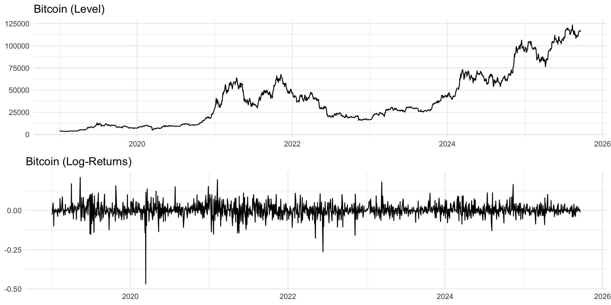
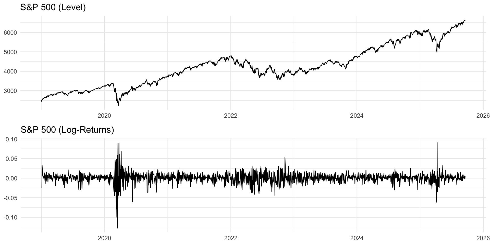
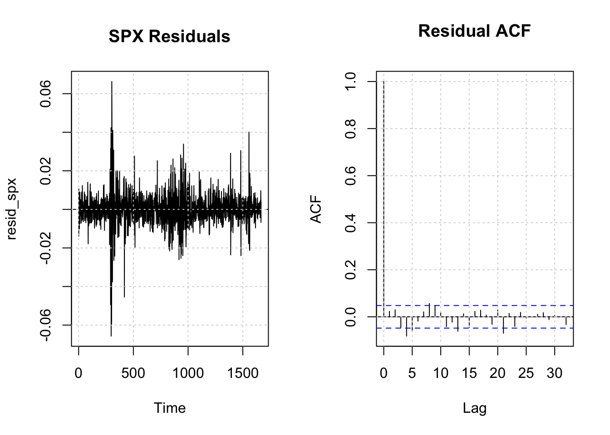
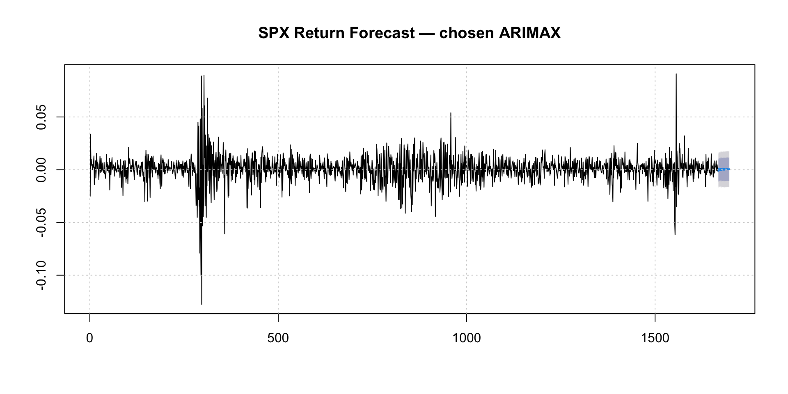
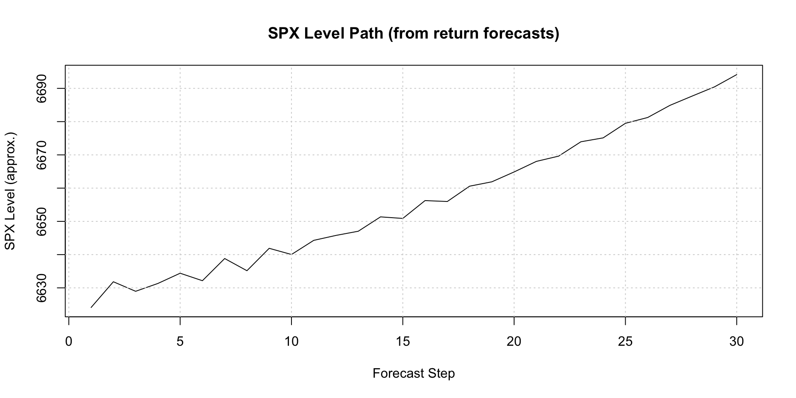
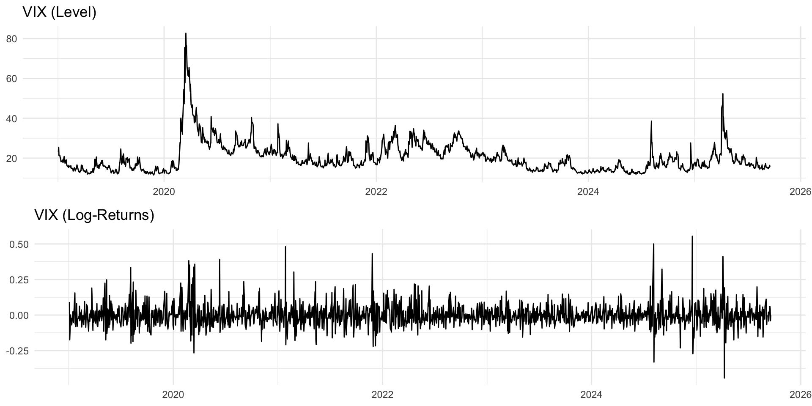
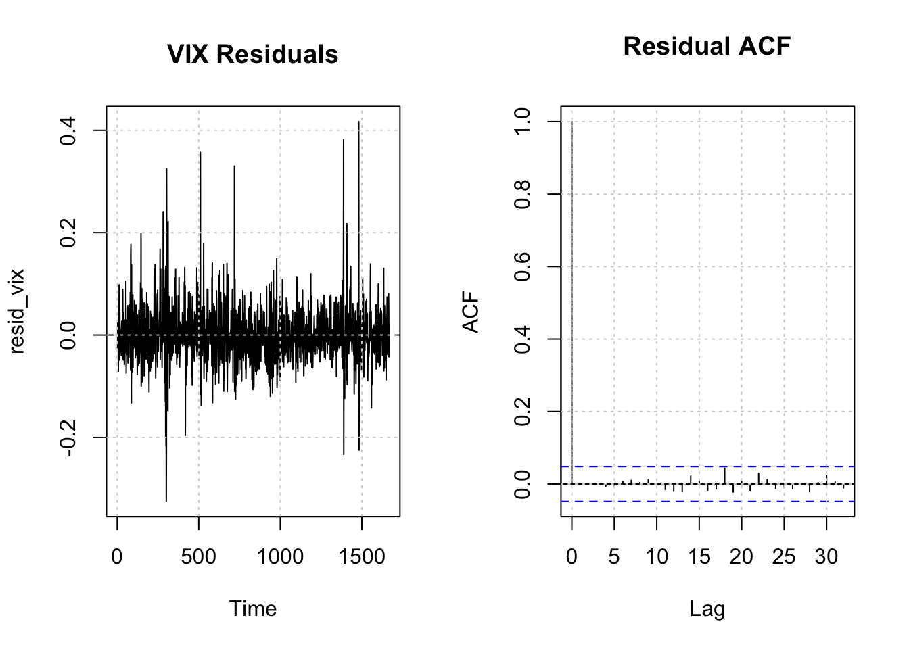
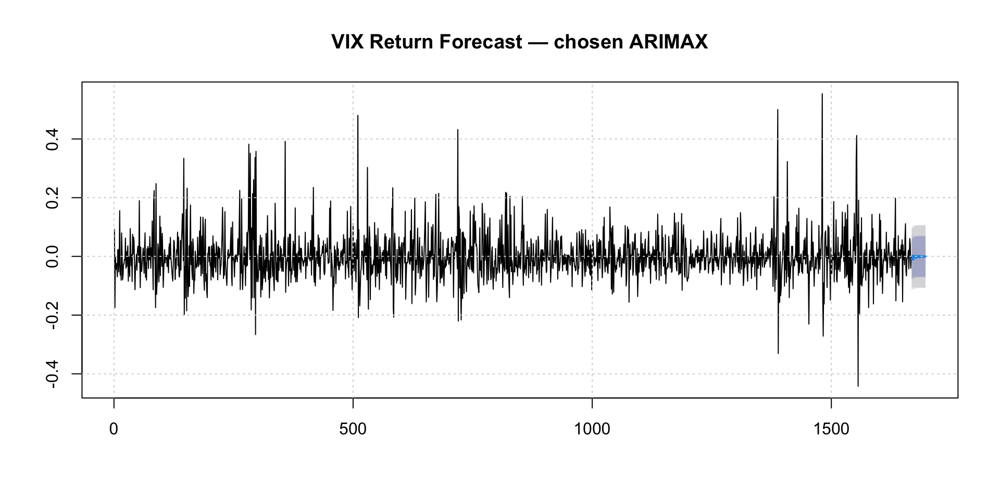
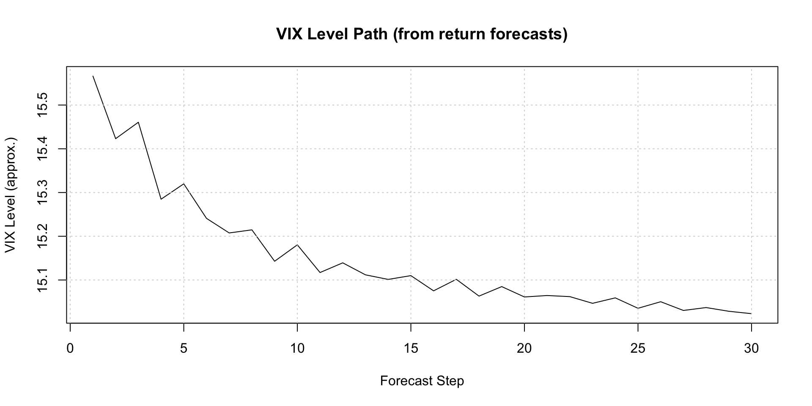

Code
suppressPackageStartupMessages({
library(quantmod); library(zoo); library(xts)
library(tidyverse); library(forecast); library(tseries)
library(ggplot2)
})In this analysis, we investigate the relationships between cryptocurrency markets (Bitcoin), traditional equity markets (S&P 500), market volatility (VIX), and macroeconomic indicators (CPI). Understanding these relationships is crucial for portfolio diversification, risk management, and forecasting in modern financial markets.
Financial markets exhibit complex interdependencies that have evolved significantly with the emergence of cryptocurrency markets. According to Nakamoto (2008) and subsequent cryptocurrency research, Bitcoin was designed as a decentralized alternative to traditional fiat currencies. However, empirical studies by Baur & Dimpfl (2018) show that Bitcoin increasingly behaves like a traditional financial asset, responding to macroeconomic and market conditions.
The S&P 500 serves as a broad measure of U.S. equity market performance and overall economic health. Research by Corbet et al. (2018) demonstrates significant spillover effects between traditional equity markets and cryptocurrency markets, particularly during periods of market stress. During the COVID-19 pandemic, both Bitcoin and the S&P 500 experienced simultaneous crashes, suggesting increasing correlation.
The VIX (CBOE Volatility Index), often called the “fear gauge,” measures expected market volatility. Studies by Whaley (2009) establish the VIX as a leading indicator of market sentiment. Recent research by Smales (2019) shows that Bitcoin exhibits increased correlation with traditional markets during high-volatility periods, suggesting that market fear affects all asset classes. The inverse relationship between VIX and S&P 500 is well-documented, with VIX typically rising when stock prices fall.
The U.S. Dollar Index (USD) summarizes the value of the U.S. dollar against a basket of major currencies. Dollar strength is linked to global risk sentiment and capital flows. A stronger dollar is often associated with tighter global financial conditions and may put pressure on risky assets such as equities and cryptocurrencies.
Variable Justification:
Based on this literature, I focus on the following relationships:
Based on the literature and data availability, I estimate the following models:
Model 1 (ARIMAX): Bitcoin_ret ~ SP500_ret + VIX_ret
- Rationale: Test whether Bitcoin returns are driven by traditional market performance and market fear.
Model 2 (ARIMAX): SP500_ret ~ Bitcoin_ret + VIX_ret
- Rationale: Examine how cryptocurrency returns and volatility interact with equity returns.
Model 3 (ARIMAX): VIX_ret ~ Bitcoin_ret + SP500_ret
- Rationale: Test whether movements in equities and Bitcoin help explain changes in implied volatility.
Model 4 (ARIMAX): USD_ret ~ Bitcoin_ret + SP500_ret
- Rationale: Explore how equity and crypto markets relate to changes in the broad U.S. dollar index.
Model 5 (VAR): [Bitcoin_ret, SP500_ret, VIX_ret]
- Rationale: Capture bidirectional relationships and dynamic interactions among cryptocurrency, equities, and volatility.
For this homework, I focus primarily on the ARIMAX models (Models 1–4) and a VAR model including Bitcoin, SP500, and VIX.
suppressPackageStartupMessages({
library(quantmod); library(zoo); library(xts)
library(tidyverse); library(forecast); library(tseries)
library(ggplot2)
})start_date <- as.Date("2019-01-01")
end_date <- as.Date("2025-09-18")
# helper (safe) loader
load_fred_data <- function(symbol, start, end) {
tryCatch({
getSymbols(symbol, src = "FRED", from = start, to = end, auto.assign = FALSE)
}, error = function(e) {
cat(sprintf("Warning: Could not load %s (%s)\n", symbol, e$message))
NULL
})
}
# Load and merge only if needed
if (!exists("price_data") ||
!all(c("Date","SP500","VIX","Bitcoin","USD") %in% names(price_data))) {
sp500_data <- load_fred_data("SP500", start_date, end_date)
vix_data <- load_fred_data("VIXCLS", start_date, end_date)
btc_data <- load_fred_data("CBBTCUSD", start_date, end_date)
usd_data <- load_fred_data("DTWEXBGS", start_date, end_date) # NEW: USD
merged <- merge(
SP500 = sp500_data,
VIX = vix_data,
Bitcoin = btc_data,
USD = usd_data
)
price_data <- fortify.zoo(merged)
colnames(price_data) <- c("Date","SP500","VIX","Bitcoin","USD")
price_data <- price_data |> arrange(Date) |> na.omit()
}
# Daily log-returns (stationary)
returns <- price_data |>
mutate(
SP500_ret = c(NA, diff(log(SP500))),
VIX_ret = c(NA, diff(log(VIX))),
Bitcoin_ret = c(NA, diff(log(Bitcoin))),
USD_ret = c(NA, diff(log(USD))) # NEW: USD returns
) |>
na.omit()p1 <- ggplot(price_data, aes(Date, Bitcoin)) +
geom_line() + theme_minimal() + labs(title="Bitcoin (Level)", x=NULL, y=NULL)
p2 <- ggplot(returns, aes(Date, Bitcoin_ret)) +
geom_line() + theme_minimal() + labs(title="Bitcoin (Log-Returns)", x=NULL, y=NULL)
gridExtra::grid.arrange(p1, p2, nrow=2)
# Quick sanity checks for using SP500_ret & VIX_ret as xreg
cm <- cor(returns[, c("Bitcoin_ret","SP500_ret","VIX_ret")], use="complete.obs")
print(round(cm, 3)) Bitcoin_ret SP500_ret VIX_ret
Bitcoin_ret 1.000 0.283 -0.221
SP500_ret 0.283 1.000 -0.728
VIX_ret -0.221 -0.728 1.000# Stationarity (ADF) on returns
adf_btc <- adf.test(returns$Bitcoin_ret)
adf_spx <- adf.test(returns$SP500_ret)
adf_vix <- adf.test(returns$VIX_ret)
cat(sprintf("ADF p-values → BTC: %.4f | SPX: %.4f | VIX: %.4f\n",
adf_btc$p.value, adf_spx$p.value, adf_vix$p.value))ADF p-values → BTC: 0.0100 | SPX: 0.0100 | VIX: 0.0100# Assemble y and scaled xreg
y <- as.numeric(returns$Bitcoin_ret)
X <- as.matrix(returns[, c("SP500_ret","VIX_ret")])
XS <- scale(X) # keep attributes for future scaling
# Method 1 — Auto.ARIMA with xreg
m_btc_auto <- forecast::auto.arima(y, xreg = XS, seasonal = FALSE)
cat("AUTO.ARIMA with xreg summary:\n"); print(summary(m_btc_auto))AUTO.ARIMA with xreg summary:Series: y
Regression with ARIMA(0,0,1) errors
Coefficients:
ma1 intercept SP500_ret VIX_ret
-0.0509 2e-03 0.0106 -0.0014
s.e. 0.0239 9e-04 0.0014 0.0014
sigma^2 = 0.001532: log likelihood = 3038.74
AIC=-6067.48 AICc=-6067.44 BIC=-6040.38
Training set error measures:
ME RMSE MAE MPE MAPE MASE
Training set -2.889967e-07 0.03909278 0.02628258 84.64458 181.4527 0.6305882
ACF1
Training set -0.001210254# Method 2 — Manual: OLS then ARIMA on residuals, finally ARIMAX with that order
ols <- lm(y ~ XS)
res <- resid(ols)
res_arima <- forecast::auto.arima(res, seasonal = FALSE)
ord <- arimaorder(res_arima)
m_btc_manual <- Arima(y, order = ord, xreg = XS, include.mean = TRUE)
cat("\nMANUAL ARIMAX summary:\n"); print(summary(m_btc_manual))
MANUAL ARIMAX summary:Series: y
Regression with ARIMA(0,0,1) errors
Coefficients:
ma1 intercept SP500_ret VIX_ret
-0.0509 2e-03 0.0106 -0.0014
s.e. 0.0239 9e-04 0.0014 0.0014
sigma^2 = 0.001532: log likelihood = 3038.74
AIC=-6067.48 AICc=-6067.44 BIC=-6040.38
Training set error measures:
ME RMSE MAE MPE MAPE MASE
Training set -2.889967e-07 0.03909278 0.02628258 84.64458 181.4527 0.6305882
ACF1
Training set -0.001210254H <- 20 # horizon
K <- 10 # folds
n <- length(y)
rmse_auto <- c(); rmse_manual <- c()
for (i in 1:K) {
tr_end <- n - H*(K - i + 1)
if (tr_end < 250) break
y_tr <- y[1:tr_end]
y_te <- y[(tr_end+1):(tr_end+H)]
X_tr <- XS[1:tr_end, , drop=FALSE]
X_te <- XS[(tr_end+1):(tr_end+H), , drop=FALSE]
# auto
fit_a <- try(auto.arima(y_tr, xreg = X_tr, seasonal = FALSE), silent=TRUE)
if (!inherits(fit_a, "try-error")) {
fc_a <- forecast(fit_a, xreg = X_te, h = H)
rmse_auto <- c(rmse_auto, sqrt(mean((y_te - as.numeric(fc_a$mean))^2)))
}
# manual (use the order we found above)
fit_m <- try(Arima(y_tr, order = ord, xreg = X_tr, include.mean = TRUE), silent=TRUE)
if (!inherits(fit_m, "try-error")) {
fc_m <- forecast(fit_m, xreg = X_te, h = H)
rmse_manual <- c(rmse_manual, sqrt(mean((y_te - as.numeric(fc_m$mean))^2)))
}
}
cv_df <- tibble(
Fold = 1:max(length(rmse_auto), length(rmse_manual)),
Auto = rmse_auto,
Manual= rmse_manual
) |> pivot_longer(-Fold, names_to="Model", values_to="RMSE")
ggplot(na.omit(cv_df), aes(Fold, RMSE, color=Model)) +
geom_line() + geom_point(size=2) + theme_minimal() +
labs(title="BTC ARIMAX — Rolling CV RMSE", x="Fold", y="RMSE")
cat(sprintf("Mean RMSE → Auto: %.5f | Manual: %.5f\n",
mean(rmse_auto, na.rm=TRUE), mean(rmse_manual, na.rm=TRUE)))Mean RMSE → Auto: 0.02625 | Manual: 0.02625best_is_auto <- mean(rmse_auto, na.rm=TRUE) <= mean(rmse_manual, na.rm=TRUE)
cat(sprintf("Chosen by CV: %s\n", ifelse(best_is_auto, "AUTO.ARIMA", "MANUAL ARIMAX")))Chosen by CV: AUTO.ARIMAbest_model <- if (best_is_auto) m_btc_auto else m_btc_manual
cat("Final chosen model summary:\n"); print(summary(best_model))Final chosen model summary:Series: y
Regression with ARIMA(0,0,1) errors
Coefficients:
ma1 intercept SP500_ret VIX_ret
-0.0509 2e-03 0.0106 -0.0014
s.e. 0.0239 9e-04 0.0014 0.0014
sigma^2 = 0.001532: log likelihood = 3038.74
AIC=-6067.48 AICc=-6067.44 BIC=-6040.38
Training set error measures:
ME RMSE MAE MPE MAPE MASE
Training set -2.889967e-07 0.03909278 0.02628258 84.64458 181.4527 0.6305882
ACF1
Training set -0.001210254# Diagnostics
resid_b <- residuals(best_model)
par(mfrow=c(1,2))
plot(resid_b, type="l", main="Residuals", ylab=NULL); abline(h=0, lty=2); grid()
acf(resid_b, main="Residual ACF"); grid()
par(mfrow=c(1,1))
lb <- Box.test(resid_b, lag = 20, type = "Ljung-Box")
cat(sprintf("Ljung-Box p (lag=20): %.4f\n", lb$p.value))Ljung-Box p (lag=20): 0.2697# Equation print (regression part only)
co <- coef(best_model)
b_spx <- co[grep("SP500_ret", names(co))]
b_vix <- co[grep("VIX_ret", names(co))]
cat("\nRegression portion (on standardized xreg):\n")
Regression portion (on standardized xreg):cat(sprintf("BTC_ret_t = %.4f·SP500_ret_std_t %+ .4f·VIX_ret_std_t + ARMA errors\n",
ifelse(length(b_spx)==0, 0, b_spx),
ifelse(length(b_vix)==0, 0, b_vix)))BTC_ret_t = 0.0106·SP500_ret_std_t -0.0014·VIX_ret_std_t + ARMA errorsH <- 30
# Forecast exogenous returns first
spx_fc <- forecast::forecast(auto.arima(returns$SP500_ret), h = H)$mean
vix_fc <- forecast::forecast(auto.arima(returns$VIX_ret), h = H)$mean
Xfut <- cbind(SP500_ret = as.numeric(spx_fc), VIX_ret = as.numeric(vix_fc))
# scale with training attributes from XS
XfutS <- scale(Xfut,
center = attr(scale(as.matrix(returns[,c("SP500_ret","VIX_ret")])), "scaled:center"),
scale = attr(scale(as.matrix(returns[,c("SP500_ret","VIX_ret")])), "scaled:scale"))
btc_ret_fc <- forecast(best_model, xreg = XfutS, h = H)
plot(btc_ret_fc, main="BTC Return Forecast — chosen ARIMAX"); grid()
# Convert return forecast to a *price level* path (for intuition)
last_lvl <- tail(price_data$Bitcoin, 1)
lvl_path <- last_lvl * exp(cumsum(as.numeric(btc_ret_fc$mean)))
# quick level-path plot
op <- par(mar=c(4,4,3,1))
plot(lvl_path, type="l", xlab="Forecast Step", ylab="BTC Level (approx.)",
main="BTC Level Path (from return forecasts)")
grid()
par(op)
cat(sprintf("Last observed BTC level: %.2f\n", last_lvl))Last observed BTC level: 115690.55cat(sprintf("Forecasted BTC level at step %d: %.2f\n", H, tail(lvl_path,1)))Forecasted BTC level at step 30: 122879.60p1 <- ggplot(price_data, aes(Date, SP500)) +
geom_line() + theme_minimal() + labs(title="S&P 500 (Level)", x=NULL, y=NULL)
p2 <- ggplot(returns, aes(Date, SP500_ret)) +
geom_line() + theme_minimal() + labs(title="S&P 500 (Log-Returns)", x=NULL, y=NULL)
gridExtra::grid.arrange(p1, p2, nrow=2)
cm_spx <- cor(returns[, c("SP500_ret","Bitcoin_ret","VIX_ret")], use="complete.obs")
print(round(cm_spx, 3)) SP500_ret Bitcoin_ret VIX_ret
SP500_ret 1.000 0.283 -0.728
Bitcoin_ret 0.283 1.000 -0.221
VIX_ret -0.728 -0.221 1.000adf_spx <- tseries::adf.test(returns$SP500_ret)
adf_btc <- tseries::adf.test(returns$Bitcoin_ret)
adf_vix <- tseries::adf.test(returns$VIX_ret)
cat(sprintf("ADF p-values → SPX: %.4f | BTC: %.4f | VIX: %.4f\n",
adf_spx$p.value, adf_btc$p.value, adf_vix$p.value))ADF p-values → SPX: 0.0100 | BTC: 0.0100 | VIX: 0.0100y2 <- as.numeric(returns$SP500_ret)
X2 <- as.matrix(returns[, c("Bitcoin_ret","VIX_ret")]) # exog: BTC, VIX returns
X2S <- scale(X2)
m_spx_auto <- forecast::auto.arima(y2, xreg = X2S, seasonal = FALSE)
cat("AUTO.ARIMA (SPX) summary:\n"); print(summary(m_spx_auto))AUTO.ARIMA (SPX) summary:Series: y2
Regression with ARIMA(2,0,2) errors
Coefficients:
ar1 ar2 ma1 ma2 intercept Bitcoin_ret VIX_ret
-1.7159 -0.8621 1.5823 0.7008 6e-04 0.0014 -0.0087
s.e. 0.0283 0.0255 0.0402 0.0356 2e-04 0.0002 0.0002
sigma^2 = 6.801e-05: log likelihood = 5636.05
AIC=-11256.09 AICc=-11256 BIC=-11212.74
Training set error measures:
ME RMSE MAE MPE MAPE MASE
Training set -7.875776e-07 0.008229595 0.00538296 174.237 394.5584 0.439583
ACF1
Training set 0.02334035ols2 <- lm(y2 ~ X2S)
res2 <- resid(ols2)
res2_arima <- forecast::auto.arima(res2, seasonal = FALSE)
ord2 <- arimaorder(res2_arima)
m_spx_manual <- Arima(y2, order = ord2, xreg = X2S, include.mean = TRUE)
cat("\nMANUAL ARIMAX (SPX) summary:\n"); print(summary(m_spx_manual))
MANUAL ARIMAX (SPX) summary:Series: y2
Regression with ARIMA(2,0,2) errors
Coefficients:
ar1 ar2 ma1 ma2 intercept Bitcoin_ret VIX_ret
-1.7159 -0.8621 1.5823 0.7008 6e-04 0.0014 -0.0087
s.e. 0.0283 0.0255 0.0402 0.0356 2e-04 0.0002 0.0002
sigma^2 = 6.801e-05: log likelihood = 5636.05
AIC=-11256.09 AICc=-11256 BIC=-11212.74
Training set error measures:
ME RMSE MAE MPE MAPE MASE
Training set -7.875776e-07 0.008229595 0.00538296 174.237 394.5584 0.439583
ACF1
Training set 0.02334035H <- 20; K <- 10; n2 <- length(y2)
rmse_auto2 <- c(); rmse_manual2 <- c()
for (i in 1:K) {
tr_end <- n2 - H*(K - i + 1); if (tr_end < 250) break
y_tr <- y2[1:tr_end]; y_te <- y2[(tr_end+1):(tr_end+H)]
X_tr <- X2S[1:tr_end, , drop=FALSE]; X_te <- X2S[(tr_end+1):(tr_end+H), , drop=FALSE]
fa <- try(auto.arima(y_tr, xreg = X_tr, seasonal = FALSE), silent=TRUE)
if (!inherits(fa,"try-error")) {
fc <- forecast(fa, xreg = X_te, h = H)
rmse_auto2 <- c(rmse_auto2, sqrt(mean((y_te - as.numeric(fc$mean))^2)))
}
fm <- try(Arima(y_tr, order=ord2, xreg=X_tr, include.mean=TRUE), silent=TRUE)
if (!inherits(fm,"try-error")) {
fc <- forecast(fm, xreg = X_te, h = H)
rmse_manual2 <- c(rmse_manual2, sqrt(mean((y_te - as.numeric(fc$mean))^2)))
}
}
cv_spx <- tibble(Fold=1:max(length(rmse_auto2),length(rmse_manual2)),
Auto=rmse_auto2, Manual=rmse_manual2) |>
pivot_longer(-Fold, names_to="Model", values_to="RMSE")
ggplot(na.omit(cv_spx), aes(Fold, RMSE, color=Model)) +
geom_line() + geom_point(size=2) + theme_minimal() +
labs(title="SPX ARIMAX — Rolling CV RMSE")
cat(sprintf("Mean RMSE → Auto: %.5f | Manual: %.5f\n",
mean(rmse_auto2, na.rm=TRUE), mean(rmse_manual2, na.rm=TRUE)))Mean RMSE → Auto: 0.00574 | Manual: 0.00574best_spx_is_auto <- mean(rmse_auto2, na.rm=TRUE) <= mean(rmse_manual2, na.rm=TRUE)
cat(sprintf("Chosen by CV: %s\n", ifelse(best_spx_is_auto,"AUTO.ARIMA","MANUAL ARIMAX")))Chosen by CV: AUTO.ARIMAbest_spx <- if (best_spx_is_auto) m_spx_auto else m_spx_manual
cat("Final SPX model summary:\n"); print(summary(best_spx))Final SPX model summary:Series: y2
Regression with ARIMA(2,0,2) errors
Coefficients:
ar1 ar2 ma1 ma2 intercept Bitcoin_ret VIX_ret
-1.7159 -0.8621 1.5823 0.7008 6e-04 0.0014 -0.0087
s.e. 0.0283 0.0255 0.0402 0.0356 2e-04 0.0002 0.0002
sigma^2 = 6.801e-05: log likelihood = 5636.05
AIC=-11256.09 AICc=-11256 BIC=-11212.74
Training set error measures:
ME RMSE MAE MPE MAPE MASE
Training set -7.875776e-07 0.008229595 0.00538296 174.237 394.5584 0.439583
ACF1
Training set 0.02334035resid_spx <- residuals(best_spx)
par(mfrow=c(1,2))
plot(resid_spx, type="l", main="SPX Residuals"); abline(h=0,lty=2); grid()
acf(resid_spx, main="Residual ACF"); grid()
par(mfrow=c(1,1))
lb2 <- Box.test(resid_spx, lag=20, type="Ljung-Box")
cat(sprintf("Ljung-Box p (lag=20): %.4f\n", lb2$p.value))Ljung-Box p (lag=20): 0.0001co2 <- coef(best_spx)
b_btc <- co2[grep("Bitcoin_ret", names(co2))]
b_vix <- co2[grep("VIX_ret", names(co2))]
cat("\nRegression portion (standardized xreg):\n")
Regression portion (standardized xreg):cat(sprintf("SPX_ret_t = %.4f·BTC_ret_std_t %+ .4f·VIX_ret_std_t + ARMA errors\n",
ifelse(length(b_btc)==0,0,b_btc),
ifelse(length(b_vix)==0,0,b_vix)))SPX_ret_t = 0.0014·BTC_ret_std_t -0.0087·VIX_ret_std_t + ARMA errorsH <- 30
# Forecast exogenous BTC & VIX returns
btc_fc2 <- forecast::forecast(auto.arima(returns$Bitcoin_ret), h = H)$mean
vix_fc2 <- forecast::forecast(auto.arima(returns$VIX_ret), h = H)$mean
Xfut2 <- cbind(Bitcoin_ret = as.numeric(btc_fc2), VIX_ret = as.numeric(vix_fc2))
Xfut2S <- scale(Xfut2,
center = attr(scale(as.matrix(returns[,c("Bitcoin_ret","VIX_ret")])), "scaled:center"),
scale = attr(scale(as.matrix(returns[,c("Bitcoin_ret","VIX_ret")])), "scaled:scale"))
spx_ret_fc <- forecast(best_spx, xreg = Xfut2S, h = H)
plot(spx_ret_fc, main="SPX Return Forecast — chosen ARIMAX"); grid()
last_spx <- tail(price_data$SP500,1)
spx_level_path <- last_spx * exp(cumsum(as.numeric(spx_ret_fc$mean)))
plot(spx_level_path, type="l", xlab="Forecast Step", ylab="SPX Level (approx.)",
main="SPX Level Path (from return forecasts)"); grid()
cat(sprintf("Last SPX level: %.2f | Forecasted level @%d: %.2f\n",
last_spx, H, tail(spx_level_path,1)))Last SPX level: 6631.96 | Forecasted level @30: 6694.15p1 <- ggplot(price_data, aes(Date, VIX)) +
geom_line() + theme_minimal() + labs(title="VIX (Level)", x=NULL, y=NULL)
p2 <- ggplot(returns, aes(Date, VIX_ret)) +
geom_line() + theme_minimal() + labs(title="VIX (Log-Returns)", x=NULL, y=NULL)
gridExtra::grid.arrange(p1, p2, nrow=2)
cm_vix <- cor(returns[, c("VIX_ret","Bitcoin_ret","SP500_ret")], use="complete.obs")
print(round(cm_vix, 3)) VIX_ret Bitcoin_ret SP500_ret
VIX_ret 1.000 -0.221 -0.728
Bitcoin_ret -0.221 1.000 0.283
SP500_ret -0.728 0.283 1.000adf_vix <- tseries::adf.test(returns$VIX_ret)
adf_btc <- tseries::adf.test(returns$Bitcoin_ret)
adf_spx <- tseries::adf.test(returns$SP500_ret)
cat(sprintf("ADF p-values → VIX: %.4f | BTC: %.4f | SPX: %.4f\n",
adf_vix$p.value, adf_btc$p.value, adf_spx$p.value))ADF p-values → VIX: 0.0100 | BTC: 0.0100 | SPX: 0.0100y3 <- as.numeric(returns$VIX_ret)
X3 <- as.matrix(returns[, c("Bitcoin_ret","SP500_ret")]) # exog: BTC, SPX returns
X3S <- scale(X3)
m_vix_auto <- forecast::auto.arima(y3, xreg = X3S, seasonal = FALSE)
cat("AUTO.ARIMA (VIX) summary:\n"); print(summary(m_vix_auto))AUTO.ARIMA (VIX) summary:Series: y3
Regression with ARIMA(3,0,4) errors
Coefficients:
ar1 ar2 ar3 ma1 ma2 ma3 ma4 Bitcoin_ret
-0.4140 0.5175 0.3446 0.2941 -0.5678 -0.3391 -0.1049 -0.0004
s.e. 0.1754 0.0833 0.1464 0.1749 0.0892 0.1515 0.0353 0.0013
SP500_ret
-0.0587
s.e. 0.0014
sigma^2 = 0.002838: log likelihood = 2527.27
AIC=-5034.53 AICc=-5034.4 BIC=-4980.35
Training set error measures:
ME RMSE MAE MPE MAPE MASE
Training set -0.0004983514 0.05312771 0.03700709 NaN Inf 0.4536262
ACF1
Training set 0.0001232169ols3 <- lm(y3 ~ X3S)
res3 <- resid(ols3)
res3_arima <- forecast::auto.arima(res3, seasonal = FALSE)
ord3 <- arimaorder(res3_arima)
m_vix_manual <- Arima(y3, order = ord3, xreg = X3S, include.mean = TRUE)
cat("\nMANUAL ARIMAX (VIX) summary:\n"); print(summary(m_vix_manual))
MANUAL ARIMAX (VIX) summary:Series: y3
Regression with ARIMA(3,0,4) errors
Coefficients:
ar1 ar2 ar3 ma1 ma2 ma3 ma4 intercept
-0.4147 0.5179 0.3456 0.2947 -0.5685 -0.3401 -0.1048 -2e-04
s.e. 0.1752 0.0832 0.1462 0.1748 0.0891 0.1513 0.0353 7e-04
Bitcoin_ret SP500_ret
-0.0004 -0.0587
s.e. 0.0013 0.0014
sigma^2 = 0.002839: log likelihood = 2527.34
AIC=-5032.67 AICc=-5032.51 BIC=-4973.07
Training set error measures:
ME RMSE MAE MPE MAPE MASE ACF1
Training set -1.34067e-05 0.05312549 0.03696717 NaN Inf 0.4531368 0.0001913375H <- 20; K <- 10; n3 <- length(y3)
rmse_auto3 <- c(); rmse_manual3 <- c()
for (i in 1:K) {
tr_end <- n3 - H*(K - i + 1); if (tr_end < 250) break
y_tr <- y3[1:tr_end]; y_te <- y3[(tr_end+1):(tr_end+H)]
X_tr <- X3S[1:tr_end, , drop=FALSE]; X_te <- X3S[(tr_end+1):(tr_end+H), , drop=FALSE]
fa <- try(auto.arima(y_tr, xreg = X_tr, seasonal = FALSE), silent=TRUE)
if (!inherits(fa,"try-error")) {
fc <- forecast(fa, xreg = X_te, h = H)
rmse_auto3 <- c(rmse_auto3, sqrt(mean((y_te - as.numeric(fc$mean))^2)))
}
fm <- try(Arima(y_tr, order=ord3, xreg=X_tr, include.mean=TRUE), silent=TRUE)
if (!inherits(fm,"try-error")) {
fc <- forecast(fm, xreg = X_te, h = H)
rmse_manual3 <- c(rmse_manual3, sqrt(mean((y_te - as.numeric(fc$mean))^2)))
}
}
cv_vix <- tibble(Fold=1:max(length(rmse_auto3),length(rmse_manual3)),
Auto=rmse_auto3, Manual=rmse_manual3) |>
pivot_longer(-Fold, names_to="Model", values_to="RMSE")
ggplot(na.omit(cv_vix), aes(Fold, RMSE, color=Model)) +
geom_line() + geom_point(size=2) + theme_minimal() +
labs(title="VIX ARIMAX — Rolling CV RMSE")
cat(sprintf("Mean RMSE → Auto: %.5f | Manual: %.5f\n",
mean(rmse_auto3, na.rm=TRUE), mean(rmse_manual3, na.rm=TRUE)))Mean RMSE → Auto: 0.04964 | Manual: 0.04936best_vix_is_auto <- mean(rmse_auto3, na.rm=TRUE) <= mean(rmse_manual3, na.rm=TRUE)
cat(sprintf("Chosen by CV: %s\n", ifelse(best_vix_is_auto,"AUTO.ARIMA","MANUAL ARIMAX")))Chosen by CV: MANUAL ARIMAXbest_vix <- if (best_vix_is_auto) m_vix_auto else m_vix_manual
cat("Final VIX model summary:\n"); print(summary(best_vix))Final VIX model summary:Series: y3
Regression with ARIMA(3,0,4) errors
Coefficients:
ar1 ar2 ar3 ma1 ma2 ma3 ma4 intercept
-0.4147 0.5179 0.3456 0.2947 -0.5685 -0.3401 -0.1048 -2e-04
s.e. 0.1752 0.0832 0.1462 0.1748 0.0891 0.1513 0.0353 7e-04
Bitcoin_ret SP500_ret
-0.0004 -0.0587
s.e. 0.0013 0.0014
sigma^2 = 0.002839: log likelihood = 2527.34
AIC=-5032.67 AICc=-5032.51 BIC=-4973.07
Training set error measures:
ME RMSE MAE MPE MAPE MASE ACF1
Training set -1.34067e-05 0.05312549 0.03696717 NaN Inf 0.4531368 0.0001913375resid_vix <- residuals(best_vix)
par(mfrow=c(1,2))
plot(resid_vix, type="l", main="VIX Residuals"); abline(h=0,lty=2); grid()
acf(resid_vix, main="Residual ACF"); grid()
par(mfrow=c(1,1))
lb3 <- Box.test(resid_vix, lag=20, type="Ljung-Box")
cat(sprintf("Ljung-Box p (lag=20): %.4f\n", lb3$p.value))Ljung-Box p (lag=20): 0.9899co3 <- coef(best_vix)
b_btc3 <- co3[grep("Bitcoin_ret", names(co3))]
b_spx3 <- co3[grep("SP500_ret", names(co3))]
cat("\nRegression portion (standardized xreg):\n")
Regression portion (standardized xreg):cat(sprintf("VIX_ret_t = %.4f·BTC_ret_std_t %+ .4f·SPX_ret_std_t + ARMA errors\n",
ifelse(length(b_btc3)==0,0,b_btc3),
ifelse(length(b_spx3)==0,0,b_spx3)))VIX_ret_t = -0.0004·BTC_ret_std_t -0.0587·SPX_ret_std_t + ARMA errorsH <- 30
# Forecast exogenous BTC & SPX returns
btc_fc3 <- forecast::forecast(auto.arima(returns$Bitcoin_ret), h = H)$mean
spx_fc3 <- forecast::forecast(auto.arima(returns$SP500_ret), h = H)$mean
Xfut3 <- cbind(Bitcoin_ret = as.numeric(btc_fc3), SP500_ret = as.numeric(spx_fc3))
Xfut3S <- scale(Xfut3,
center = attr(scale(as.matrix(returns[,c("Bitcoin_ret","SP500_ret")])), "scaled:center"),
scale = attr(scale(as.matrix(returns[,c("Bitcoin_ret","SP500_ret")])), "scaled:scale"))
vix_ret_fc <- forecast(best_vix, xreg = Xfut3S, h = H)
plot(vix_ret_fc, main="VIX Return Forecast — chosen ARIMAX"); grid()
last_vix <- tail(price_data$VIX,1)
vix_level_path <- last_vix * exp(cumsum(as.numeric(vix_ret_fc$mean)))
plot(vix_level_path, type="l", xlab="Forecast Step", ylab="VIX Level (approx.)",
main="VIX Level Path (from return forecasts)"); grid()
cat(sprintf("Last VIX level: %.2f | Forecasted level @%d: %.2f\n",
last_vix, H, tail(vix_level_path,1)))Last VIX level: 15.70 | Forecasted level @30: 15.02p1 <- ggplot(price_data, aes(Date, USD)) +
geom_line() + theme_minimal() +
labs(title="USD (Level)", x=NULL, y=NULL)
p2 <- ggplot(returns, aes(Date, USD_ret)) +
geom_line() + theme_minimal() +
labs(title="USD (Log-Returns)", x=NULL, y=NULL)
gridExtra::grid.arrange(p1, p2, nrow=2)
cm_usd <- cor(
returns[, c("USD_ret","SP500_ret","VIX_ret","Bitcoin_ret")],
use="complete.obs"
)
print(round(cm_usd, 3)) USD_ret SP500_ret VIX_ret Bitcoin_ret
USD_ret 1.000 -0.307 0.221 -0.165
SP500_ret -0.307 1.000 -0.728 0.283
VIX_ret 0.221 -0.728 1.000 -0.221
Bitcoin_ret -0.165 0.283 -0.221 1.000adf_usd <- tseries::adf.test(returns$USD_ret)Warning in tseries::adf.test(returns$USD_ret): p-value smaller than printed
p-valuecat(sprintf("ADF p-value → USD_ret: %.4f\n", adf_usd$p.value))ADF p-value → USD_ret: 0.0100# We model USD_ret using Bitcoin_ret + SP500_ret (same structure as VIX or SP500)
y_usd <- as.numeric(returns$USD_ret)
X_usd <- as.matrix(returns[, c("Bitcoin_ret","SP500_ret")])
X_usdS <- scale(X_usd)
# AUTO.ARIMA
m_usd_auto <- forecast::auto.arima(y_usd, xreg = X_usdS, seasonal = FALSE)
cat("AUTO.ARIMA (USD) summary:\n"); print(summary(m_usd_auto))AUTO.ARIMA (USD) summary:Series: y_usd
Regression with ARIMA(0,0,0) errors
Coefficients:
Bitcoin_ret SP500_ret
-3e-04 -9e-04
s.e. 1e-04 1e-04
sigma^2 = 9.204e-06: log likelihood = 7300.75
AIC=-14595.49 AICc=-14595.48 BIC=-14579.24
Training set error measures:
ME RMSE MAE MPE MAPE MASE
Training set 2.20326e-05 0.003032068 0.0022552 4.674679 217.6325 0.6825008
ACF1
Training set -0.0181938# Manual method
ols_usd <- lm(y_usd ~ X_usdS)
res_usd <- resid(ols_usd)
res_usd_arima <- forecast::auto.arima(res_usd, seasonal = FALSE)
ord_usd <- arimaorder(res_usd_arima)
m_usd_manual <- Arima(y_usd, order = ord_usd,
xreg = X_usdS, include.mean = TRUE)
cat("\nMANUAL ARIMAX (USD) summary:\n")
MANUAL ARIMAX (USD) summary:print(summary(m_usd_manual))Series: y_usd
Regression with ARIMA(3,0,1) errors
Coefficients:
ar1 ar2 ar3 ma1 intercept Bitcoin_ret SP500_ret
-0.8992 -0.0227 0.0294 0.8847 0e+00 -3e-04 -9e-04
s.e. 0.0524 0.0338 0.0254 0.0463 1e-04 1e-04 1e-04
sigma^2 = 9.178e-06: log likelihood = 7305.62
AIC=-14595.24 AICc=-14595.16 BIC=-14551.89
Training set error measures:
ME RMSE MAE MPE MAPE MASE
Training set 2.214595e-08 0.003023181 0.002250451 -13.98104 235.3292 0.6810637
ACF1
Training set 0.0007130133H <- 20; K <- 10
n_usd <- length(y_usd)
rmse_auto_usd <- c(); rmse_manual_usd <- c()
for (i in 1:K) {
tr_end <- n_usd - H*(K - i + 1)
if (tr_end < 250) break
y_tr <- y_usd[1:tr_end]
y_te <- y_usd[(tr_end+1):(tr_end+H)]
X_tr <- X_usdS[1:tr_end, , drop=FALSE]
X_te <- X_usdS[(tr_end+1):(tr_end+H), , drop=FALSE]
fit_a <- try(auto.arima(y_tr, xreg = X_tr, seasonal = FALSE), silent=TRUE)
if (!inherits(fit_a,"try-error")) {
fc <- forecast(fit_a, xreg = X_te, h = H)
rmse_auto_usd <- c(rmse_auto_usd,
sqrt(mean((y_te - as.numeric(fc$mean))^2)))
}
fit_m <- try(Arima(y_tr, order=ord_usd, xreg=X_tr, include.mean=TRUE),
silent=TRUE)
if (!inherits(fit_m,"try-error")) {
fc <- forecast(fit_m, xreg = X_te, h = H)
rmse_manual_usd <- c(rmse_manual_usd,
sqrt(mean((y_te - as.numeric(fc$mean))^2)))
}
}
cv_usd <- tibble(
Fold = 1:max(length(rmse_auto_usd),length(rmse_manual_usd)),
Auto = rmse_auto_usd,
Manual = rmse_manual_usd
) |> pivot_longer(-Fold, names_to="Model", values_to="RMSE")
ggplot(na.omit(cv_usd), aes(Fold, RMSE, color=Model)) +
geom_line() + geom_point(size=2) + theme_minimal() +
labs(title="USD ARIMAX — Rolling CV RMSE")
cat(sprintf("Mean RMSE → Auto: %.5f | Manual: %.5f\n",
mean(rmse_auto_usd, na.rm=TRUE),
mean(rmse_manual_usd, na.rm=TRUE)))Mean RMSE → Auto: 0.00328 | Manual: 0.00329best_usd_is_auto <- mean(rmse_auto_usd, na.rm=TRUE) <=
mean(rmse_manual_usd, na.rm=TRUE)
cat(sprintf("Chosen by CV: %s\n",
ifelse(best_usd_is_auto,"AUTO.ARIMA","MANUAL ARIMAX")))Chosen by CV: AUTO.ARIMAbest_usd <- if (best_usd_is_auto) m_usd_auto else m_usd_manual
cat("Final USD model summary:\n"); print(summary(best_usd))Final USD model summary:Series: y_usd
Regression with ARIMA(0,0,0) errors
Coefficients:
Bitcoin_ret SP500_ret
-3e-04 -9e-04
s.e. 1e-04 1e-04
sigma^2 = 9.204e-06: log likelihood = 7300.75
AIC=-14595.49 AICc=-14595.48 BIC=-14579.24
Training set error measures:
ME RMSE MAE MPE MAPE MASE
Training set 2.20326e-05 0.003032068 0.0022552 4.674679 217.6325 0.6825008
ACF1
Training set -0.0181938resid_usd <- residuals(best_usd)
par(mfrow=c(1,2))
plot(resid_usd, type="l", main="USD Residuals"); abline(h=0, lty=2); grid()
acf(resid_usd, main="Residual ACF"); grid()
par(mfrow=c(1,1))
lb_usd <- Box.test(resid_usd, lag=20, type="Ljung-Box")
cat(sprintf("Ljung-Box p (lag=20): %.4f\n", lb_usd$p.value))Ljung-Box p (lag=20): 0.0020co_usd <- coef(best_usd)
b_btc_usd <- co_usd[grep("Bitcoin_ret", names(co_usd))]
b_spx_usd <- co_usd[grep("SP500_ret", names(co_usd))]
cat("\nRegression portion (standardized xreg):\n")
Regression portion (standardized xreg):cat(sprintf(
"USD_ret_t = %.4f·BTC_ret_std_t %+ .4f·SPX_ret_std_t + ARMA errors\n",
ifelse(length(b_btc_usd)==0,0,b_btc_usd),
ifelse(length(b_spx_usd)==0,0,b_spx_usd)
))USD_ret_t = -0.0003·BTC_ret_std_t -0.0009·SPX_ret_std_t + ARMA errorsH <- 30
# Forecast BTC & SPX returns as xreg
btc_fc_usd <- forecast::forecast(auto.arima(returns$Bitcoin_ret), h = H)$mean
spx_fc_usd <- forecast::forecast(auto.arima(returns$SP500_ret), h = H)$mean
Xfut_usd <- cbind(Bitcoin_ret = as.numeric(btc_fc_usd),
SP500_ret = as.numeric(spx_fc_usd))
X_train_usd <- as.matrix(returns[, c("Bitcoin_ret","SP500_ret")])
Xfut_usdS <- scale(
Xfut_usd,
center = attr(scale(X_train_usd),"scaled:center"),
scale = attr(scale(X_train_usd),"scaled:scale")
)
usd_ret_fc <- forecast(best_usd, xreg = Xfut_usdS, h = H)
plot(usd_ret_fc, main="USD Return Forecast — chosen ARIMAX"); grid()
last_usd <- tail(price_data$USD,1)
usd_level_path <- last_usd * exp(cumsum(as.numeric(usd_ret_fc$mean)))
plot(usd_level_path, type="l",
main="USD Level Path (from return forecasts)",
xlab="Forecast Step", ylab="USD Index (approx.)")
grid()
cat(sprintf("Last USD level: %.2f\n", last_usd))Last USD level: 120.10cat(sprintf("Forecasted USD level @%d: %.2f\n",
H, tail(usd_level_path,1)))Forecasted USD level @30: 120.10Cross-asset predictability is weak across all models. SPX is strongly driven by VIX (fear), but Bitcoin has only tiny, insignificant dependencies on SPX or VIX, and USD is essentially unaffected by any other asset. Overall, the equity–volatility relationship dominates, while Bitcoin and USD remain mostly independent.